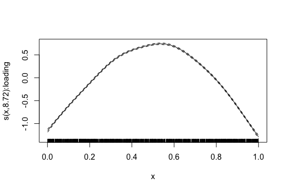

galamm estimates generalized additive latent and mixed models (GALAMMs). This is the first package implementing the model framework and the computational algorithms introduced in Sørensen, Fjell, and Walhovd (2023). It is an extension of the GLLAMM framework for multilevel latent variable modeling detailed in Rabe-Hesketh, Skrondal, and Pickles (2004) and Skrondal and Rabe-Hesketh (2004), in particular by efficiently handling crossed random effects and semiparametric estimation.
What Can the Package Do?
Many applications, particularly in the social sciences, require modeling capabilities beyond what is easily supported and computationally feasible with popular R packages like mgcv (Wood 2017), lavaan (Rosseel 2012), lme4 (Bates et al. 2015), and OpenMx (Neale et al. 2016), as well as the Stata based GLLAMM software (Rabe-Hesketh, Skrondal, and Pickles 2004, 2005). In particular, to maximally utilize large datasets available today, it is typically necessary to combine tools from latent variable modeling, hierarchical modeling, and semiparametric estimation. While this is possible with Bayesian hierarchical models and tools like Stan, it requires considerable expertise and may be beyond scope for a single data analysis project.
The goal of galamm is to enable estimation of models with an arbitrary number of grouping levels, both crossed and hierarchical, and any combination of the following features (click the links to go to the relevant vignette):
- Linear mixed models with factor structures.
- Generalized linear mixed models with factor structures.
- Linear mixed models with heteroscedastic residuals.
- Mixed models with mixed response types.
- Generalized additive mixed models with factor structures.
- Interactions between latent and observed covariates.
Random effects are defined using lme4 syntax, and the syntax for factor structures are close to that of PLmixed (Rockwood and Jeon 2019). However, for the types of models supported by both PLmixed and galamm, galamm is usually considerably faster. Smooth terms, as in generalized additive mixed models, use the same syntax as mgcv.
For most users, it should not be necessary to think about how the actual computations are performed, although they are detailed in the optimization vignette. In short, the core computations are done using sparse matrix methods supported by RcppEigen (Bates and Eddelbuettel 2013) and automatic differentiation using the C++ library autodiff (Leal 2018). Scaling of the algorithm is investigated further in the vignette on computational scaling.
Where Do I Start?
To get started, take a look at the introductory vignette.
Installation
Install the package from CRAN using
install.packages("galamm")You can install the development version of galamm from GitHub with:
# install.packages("remotes")
remotes::install_github("LCBC-UiO/galamm")Examples
Mixed Response Model
The dataframe mresp contains simulated data with mixed response types.
head(mresp)
#> id x y itemgroup
#> 1 1 0.8638214 0.2866329 a
#> 2 1 0.7676133 2.5647490 a
#> 3 1 0.8812059 1.0000000 b
#> 4 1 0.2239725 1.0000000 b
#> 5 2 0.7215696 -0.4721698 a
#> 6 2 0.6924851 1.1750286 aResponses in rows with itemgroup = "a" are normally distributed while those in rows with itemgroup = "b" are binomially distributed. For a given subject, identified by the id variable, both responses are associated with the same underlying latent variable. We hence need to model this process jointly, and the model is set up as follows:
mixed_resp <- galamm(
formula = y ~ x + (0 + loading | id),
data = mresp,
family = c(gaussian, binomial),
family_mapping = ifelse(mresp$itemgroup == "a", 1L, 2L),
load.var = "itemgroup",
lambda = matrix(c(1, NA), ncol = 1),
factor = "loading"
)The summary function gives some information about the model fit.
summary(mixed_resp)
#> GALAMM fit by maximum marginal likelihood.
#> Formula: y ~ x + (0 + loading | id)
#> Data: mresp
#>
#> AIC BIC logLik deviance df.resid
#> 9248.7 9280.2 -4619.3 3633.1 3995
#>
#> Lambda:
#> loading SE
#> lambda1 1.000 .
#> lambda2 1.095 0.09982
#>
#> Random effects:
#> Groups Name Variance Std.Dev.
#> id loading 1.05 1.025
#> Number of obs: 4000, groups: id, 1000
#>
#> Fixed effects:
#> Estimate Std. Error z value Pr(>|z|)
#> (Intercept) 0.041 0.05803 0.7065 4.799e-01
#> x 0.971 0.08594 11.2994 1.321e-29Generalized Additive Mixed Model with Factor Structures
The dataframe cognition contains simulated for which latent ability in three cognitive domains is measured across time. We focus on the first cognitive domain, and estimate a smooth trajectory for how the latent ability depends on time.
We start by reducing the data.
Next we define the matrix of factor loadings, where NA denotes unknown values to be estimated.
We then compute the model estimates, containing both a smooth term for the latent ability and random intercept for subject and timepoints.
mod <- galamm(
formula = y ~ 0 + item + sl(x, factor = "loading") +
(0 + loading | id / timepoint),
data = dat,
load.var = "item",
lambda = loading_matrix,
factor = "loading"
)We finally plot the estimated smooth term.
plot_smooth(mod)
How to cite this package
citation("galamm")
#> To cite the 'galamm' package in publications use:
#>
#> Sørensen Ø (2024). "Multilevel Semiparametric Latent Variable
#> Modeling in R with "galamm"." _Multivariate Behavioral Research_.
#> doi:10.1007/s11336-023-09910-z
#> <https://doi.org/10.1007/s11336-023-09910-z>.
#>
#> Sørensen Ø, Walhovd K, Fjell A (2023). "Longitudinal Modeling of
#> Age-Dependent Latent Traits with Generalized Additive Latent and
#> Mixed Models." _Psychometrika_, *88*(2), 456-486.
#> doi:10.1007/s11336-023-09910-z
#> <https://doi.org/10.1007/s11336-023-09910-z>.
#>
#> To see these entries in BibTeX format, use 'print(<citation>,
#> bibtex=TRUE)', 'toBibtex(.)', or set
#> 'options(citation.bibtex.max=999)'.Acknowledgement
Some parts of the code base for galamm has been derived from internal functions of the R packages, gamm4 (authors: Simon Wood and Fabian Scheipl), lme4 (authors: Douglas Bates, Martin Maechler, Ben Bolker, and Steven Walker), and mgcv (author: Simon Wood), as well the C++ library autodiff (author: Allan Leal). In accordance with the CRAN Repository Policy, all these authors are listed as contributors in the DESCRIPTION file. If you are among these authors, and don’t want to be listed as a contributor to this package, please let me know, and I will remove you.
Contributing
Contributions are very welcome, see CONTRIBUTING.md for general guidelines.